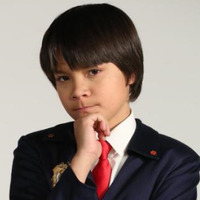

About Me
Agent Otto, Olive's partner, and in the first episode the newest employee of the organization. In contrast to his partner's more serious demeanor and personality, he is a more lenient, laid-back employee. Despite his lack of experience with his job, Otto frequently uncovers the facts needed to solve the case at hand, even doing so in the absence of his more experienced partner, proving his worth as an agent. In the season 1 finale, Otto departs the series to run another Odd Squad office as Mr. O with his partner, Olive. Agent Otto, Olive's partner, and in the first episode the newest employee of the organization. In contrast to his partner's more serious demeanor and personality, he is a more lenient, laid-back employee. Despite his lack of experience with his job, Otto frequently uncovers the facts needed to solve the case at hand, even doing so in the absence of his more experienced partner, proving his worth as an agent. In the season 1 finale, Otto departs the series to run another Odd Squad office as Mr. O with his partner, Olive.
Agent Otto, Olive's partner, and in the first episode the newest employee of the organization. In contrast to his partner's more serious demeanor and personality, he is a more lenient, laid-back employee. Despite his lack of experience with his job, Otto frequently uncovers the facts needed to solve the case at hand, even doing so in the absence of his more experienced partner, proving his worth as an agent. In the season 1 finale, Otto departs the series to run another Odd Squad office as Mr. O with his partner, Olive.